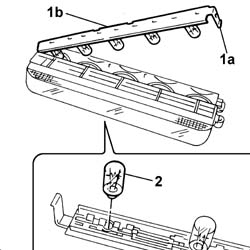

5550D17 third brake light - r r
- Path
- Procedures > 55 ELECTRICAL EQUIPMENT > 5550 WARNING AND MANOEUVRING INDICATORS > 5550D BRAKE AND REVERSING LIGHTS > 5550D17 third brake light - r r
- Kind
- repair procedure (removal / refitting; the operation number is the code)
- Applies to
- all engines; all production periods
- Interactive page
- https://sloeber94.github.io/elrnDB-fPnd/en/#/2752992
Applies to: all engines; all production periods
 Removing
Removing
 Refitting
RefittingDisconnect the battery negative terminal.
5550D16 third stop light - r+r
1. Disengage the clip (1a) and remove the bulb holder (1b).
2. Remove the bulb concerned.

Applies to: all engines; all production periods
Refitting
RemovingFit the bulb in the bulb holder.
Fit the bulb holder and check that it is secure.
5550D16 third stop light - r+r
Disconnect the battery negative terminal.